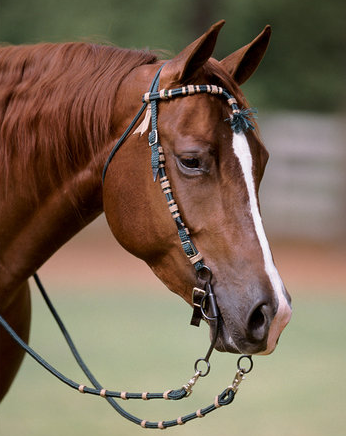
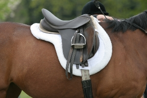

Tack and Apparel Shops
Tack and Apparel Shops
Tack is what your horse wears when they are working, and apparel is what you wear. Tack and apparel are usually found together in “tack shops.” Tack shops can be specialized for the style of riding; for example, Western or English. Some have merchandise for several riding styles. What can you find in them? Boots, breeches, jeans, shirts, jackets, helmets, gloves, saddles, bridles, saddle pads, girths and cinches, halters, leads, and much, much more!


| Shop Name | Website | Street Address | County | Products Offered |
|---|---|---|---|---|
| B-Bar Farm and Tack Shop | http://www.b-barfarms.com/ | 3918 Bivins Rd., Hillsborough | Orange | Western and English tack, apparel, footwear, barn and stable supplies |
| The Bull Chute | http://www.thebullchute.com | 6602 Glenwood Ave, Raleigh | Wake | Western apparel and footwear |
| Dover Saddlery | http://www.doversaddlery.com | 7920 Skyland Ridge Pkwy., Raleigh | Wake | English tack and apparel, footwear, barn and grooming supplies |
| M '&' M Tack Shop | http://www.mmtackshop.com/ | 2721A Dover Farm Rd, Raleigh | Wake | English apparel, footwear, tack, barn and grooming supplies, saddle fitting |
| Rocking B Saddle Shop | https://www.facebook.com/pages/Rocking-B-Saddie-Shop/152433544798285 | 1400 Ben Johnston Rd, Hillsborough | Orange | English and Western tack, small amount of grooming and barn supplies, saddle fitting |